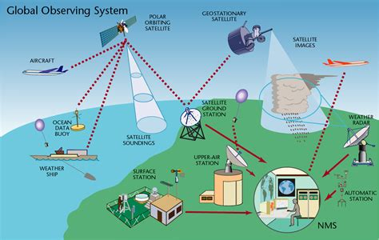
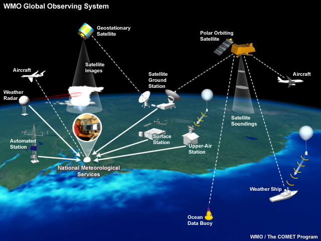
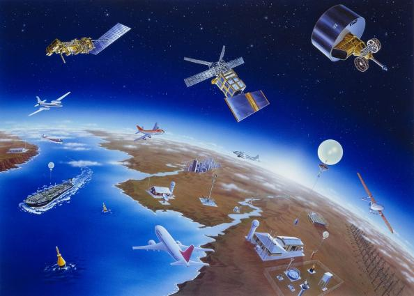
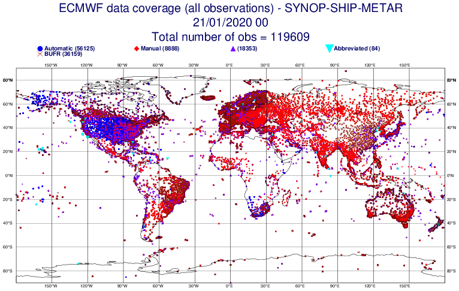
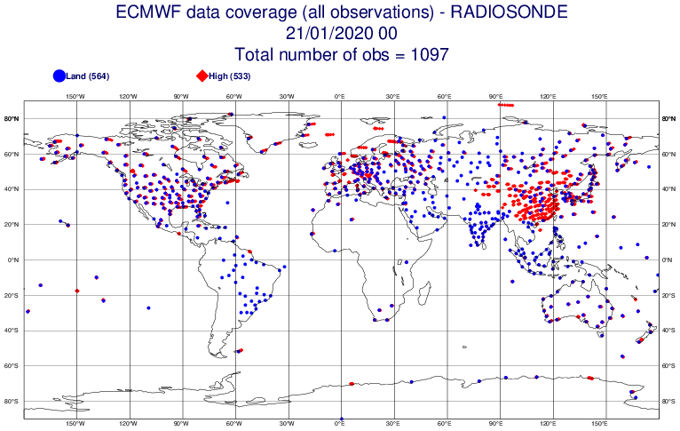
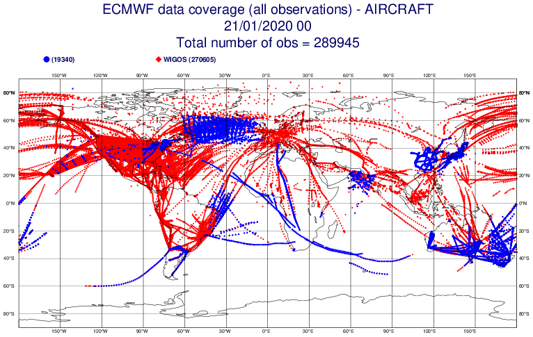
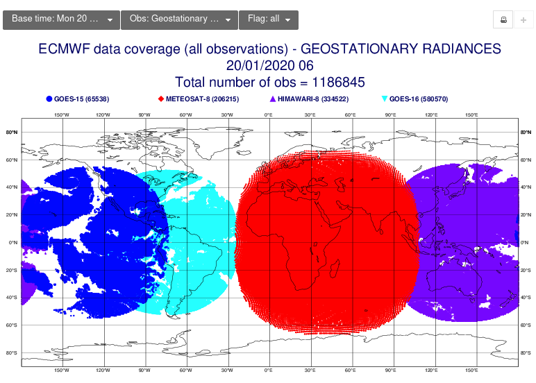
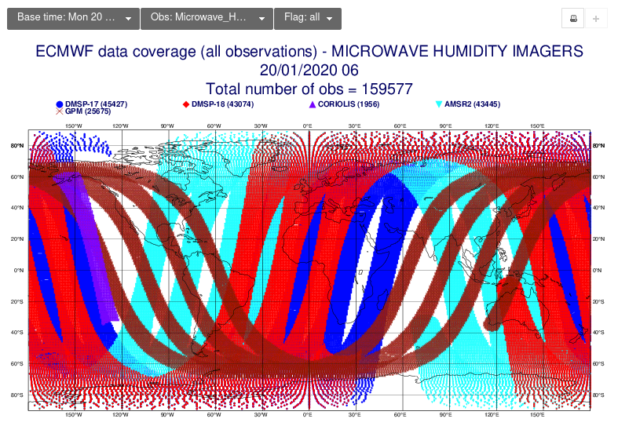
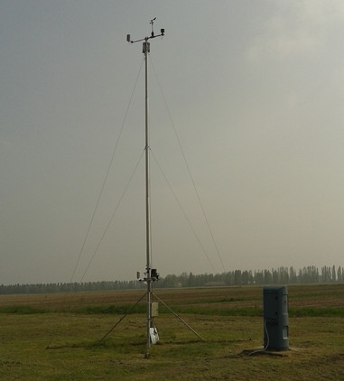

Global Observing System¶
World Meteorological Organization¶
Il WMO ( World Meteorological Organization ) è l'organizzazione fondata nel 1873 e facente parte all'ONU dal 1950, con sede a Ginevra (CH), che si occupa di meteorologia e clima.
{kind=link}
Global Observing System¶
Currently, well over 10 000 manned and automatic surface weather stations, 1 000 upper-air stations, 7 000 ships, 100 moored and 1 000 drifting buoys, hundreds of weather radars and 3 000 specially equipped commercial aircraft measure key parameters of the atmosphere, land and ocean surface every day.
Add to these some 16 meteorological and 50 research satellites to get an idea of the size of the global network for meteorological, hydrological and other geophysical observations. Once collected, observations are quality-controlled, based on technical standards defined by the WMO Instruments and Methods of Observation Programme (IMOP), then made freely available to every country in the world through the WMO Information System (WIS).
WMO facilitated the establishment, maintenance and continuing expansion of this global network, the activities of which are coordinated within the Global Observing System (GOS) of the WMO World Weather Watch (WWW). The WMO co-sponsored Global Climate Observing System (GCOS) and Global Ocean Observing System (GOOS) also play a major role in improving the collection of required data for the development of climate forecasts and climate change detection.
     Stazione sinottica¶
Norme WMO per stazioni meteorologiche¶
In una sua pubblicazione, la n°8, il WMO norma i metodi di misura per parametri meteorologici
Sensor Type |
Altezza o profondità della misura |
Considerazioni sull'esposizione |
Vento |
10m |
Non più di dieci volte l'altezza dell'ostacolo. |
Temperatura dell'aria e umidità relativa |
1.25-2.0 m |
Il sensore deve essere alloggiato in uno schermo antiradiazioni ventilato per proteggerlo dalle radiazioni termiche. |
Precipitazioni |
30 cm minimo |
AASC ed EPA suggeriscono che il sensore non sia più vicino di quattro volte l'altezza dell'ostacolo. L'orifizio del sensore deve trovarsi su un piano orizzontale, aperto verso il cielo e al di sopra del livello di spruzzi e accumuli di neve. |
Radiazione solare |
L'altezza deve essere coerente con lo standard di esposizione |
Il cielo non deve essere bloccato da alcun oggetto circostante. Tuttavia, sono ammessi oggetti <10° sopra il piano orizzontale del sensore. |
Temperatura del suolo |
5 cm, 10 cm, 20 cm, 50 cm, 100 cm |
Il sito di misurazione deve essere di 1 m² e tipico della superficie di interesse. La superficie del suolo deve essere livellata rispetto all'area circostante (10 m di raggio). |
{kind=link}